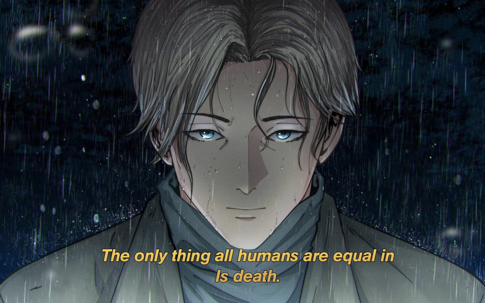

Johan Liebert
"Nascer não é algo tão excepcional… Quase tudo neste mundo destina-se a morrer. Neste mundo, uma nova vida não é nada além de um grão de areia… e não devia ser levada em conta como uma existência. A morte é natural. Então, por que está vivo? É porque alguém te quis? Quem quis ter você?"
Johan é o principal antagonista da obra Monster, sendo um dos personagens mais importantes para o desenvolvimento da história, com praticamente tudo que ocorre na trama sendo fruto de suas ações. Irmão gêmeo de Anna Liebert, deveria ter morrido ainda quando criança, porém, teve sua vida salva por Kenzou Tenma, um incrível neurocirurgião e o protagonista da trama. Por mais que tenha vivido com influências ruins em seu passado, desde pequeno Johan ainda conseguia ser um puro psicopata e um manipulador extremamente eficiente, além de ser dono de uma enorme inteligência, aproveitando-se de pessoas indefesas — inclusive crianças — para conseguir alcançar seus objetivos. No enredo, ainda há personagens que o comparam a Hitler ou chegam a dizer que ele será ainda maior, ressuscitando o nazismo e deixando apenas pessoas de "raça pura" na Terra. Todavia, Johan não despreza apenas os seus diferentes em cor, ele despreza toda a raça humana, tendo chegado a dizer que gostaria de ser a última pessoa viva no planeta. A passagem bíblica no início do anime representa a volta do Anticristo, fazendo uma referência a Johan, e diversos personagens costumam se referir a ele como o próprio Demônio, a própria Besta ou apenas como "monstro" — além disso, também há toda uma metáfora por trás do enredo da trama, na qual constantemente existe uma relação entre Johan com o "monstro sem nome".
Nomes
- Monster (Monstro)
- Humano Perfeito
- Anticristo
- Besta